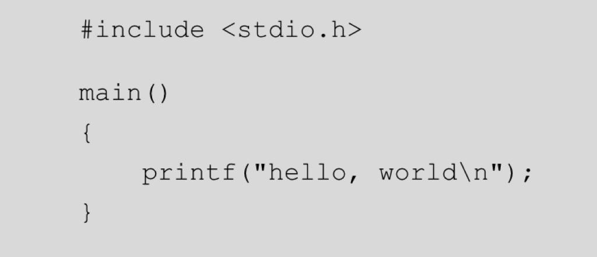

Everybody says that first thing you have to do with a program language is to say Hello to the world. Nevertheless hardly everytime they do it wrong, even when you program say "Hello" it say it wrong.
Why?, you may thing. There is a very subtle detail in the sentence: It should be written with a vocative comma. This grammatical rule is well explained in this Collins reference.
I read one time that all programming languages references writes a "Hello" program because of the book "C Programming language" written by Dennis Ritchie and Brian Kernighan; in which first program it prints a "Hello" said to the World. I was courious and tryied to look in to the book, to see if the error I point is in the very first reference, and not! You can see the image:

So, definetly this error does not comes in the original source. From where does it comes? :P